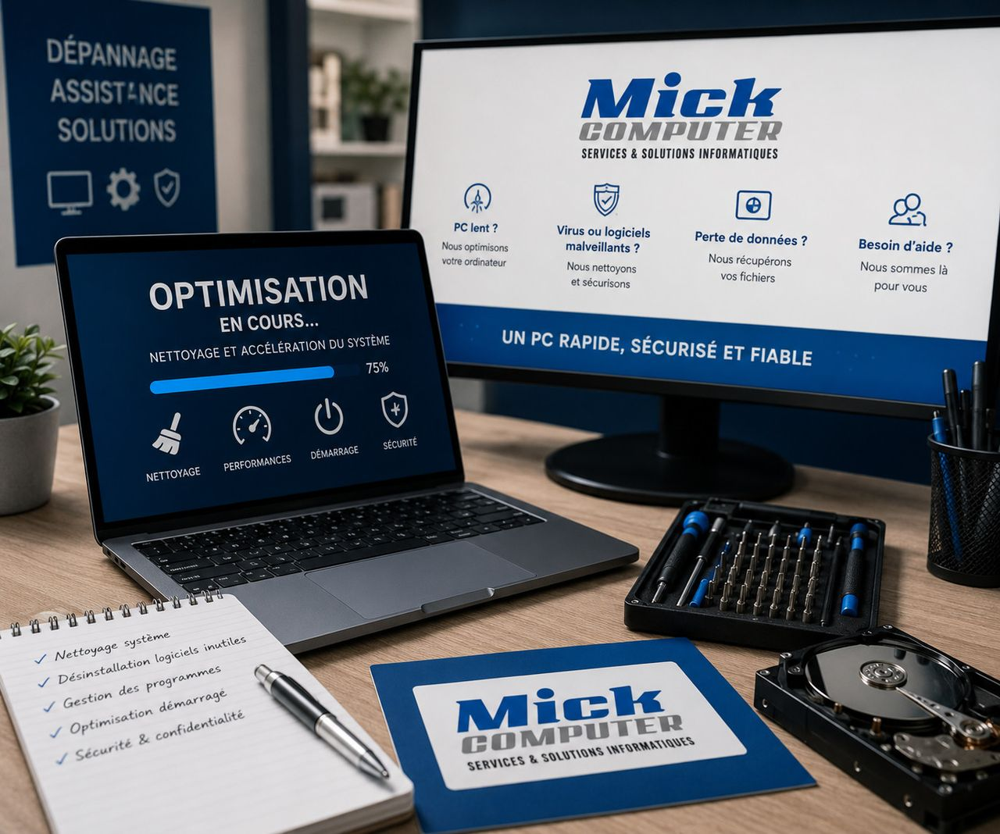

Votre PC est devenu trop lent ? On lui redonne une seconde jeunesse
Dix minutes pour démarrer, un navigateur qui rame, un sablier permanent. Avant de dépenser 800€ dans une machine neuve, laissez-nous regarder : dans la majorité des cas, un PC lent se récupère, pour une fraction du prix d'un neuf.

Pourquoi un ordinateur ralentit avec le temps
Un PC ne s'use pas comme une voiture. Il s'encombre. Chaque logiciel installé ajoute des services qui se lancent au démarrage, le disque se remplit, les mises à jour s'accumulent, la poussière étouffe la ventilation et le processeur se bride pour ne pas surchauffer.
Résultat : une machine parfaitement capable devient pénible à utiliser. Le matériel n'est presque jamais en cause. C'est ce qui tourne dessus, et souvent le disque dur.
Le SSD : le changement qui transforme un vieux PC
Si votre ordinateur a plus de cinq ans et tourne encore sur un disque dur mécanique, c'est très probablement lui le coupable. Remplacer ce disque par un SSD est l'intervention qui change le plus la vie d'une machine : démarrage en quelques secondes, logiciels qui s'ouvrent instantanément.
Nous transférons vos données et votre système sur le nouveau disque. Vous retrouvez votre ordinateur tel que vous le connaissiez, en beaucoup plus rapide.
Ce que comprend une optimisation complète
- Diagnostic réel : nous mesurons ce qui ralentit, nous ne devinons pas
- Nettoyage logiciel : programmes inutiles, démarrage automatique, tâches planifiées
- Vérification de l'état du disque et de la mémoire
- Nettoyage physique : poussière, ventilation, pâte thermique si nécessaire
- Mises à jour du système et des pilotes
- Recommandation matérielle uniquement si elle est réellement justifiée : SSD, mémoire supplémentaire
Quand faut-il vraiment changer de machine ?
Nous ne sommes pas là pour vous vendre du matériel dont vous n'avez pas besoin. Mais nous vous dirons aussi la vérité dans l'autre sens : quand un ordinateur est trop ancien pour recevoir les mises à jour de sécurité, ou quand le coût des pièces dépasse la valeur de la machine, la réparation n'a plus de sens.
Dans ce cas, nous vous orientons vers un PC sur mesure ou un modèle reconditionné garanti, adapté à ce que vous faites réellement, sans surpayer de la puissance inutile.
À domicile, partout en Wallonie
Nous intervenons chez vous à Charleroi, Namur, Philippeville, Dinant et dans toute la Wallonie. Vous voyez ce que nous faisons, et nous vous expliquons comment garder la machine rapide plus longtemps.
Un PC devenu insupportablement lent ?
Décrivez votre souci, on vous rappelle avec une solution claire et une estimation du temps nécessaire.